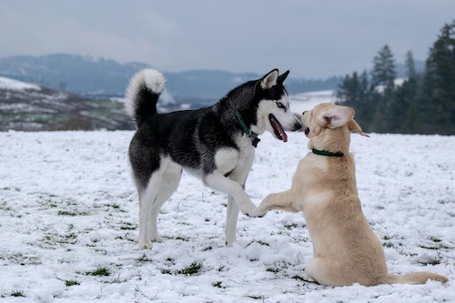

Dogs are dynamite!
Dogs are awesome because they are so loyal. Dogs can learn a lot of tricks as well. You can even win awards to become the best dog trainer. If you want a best friend for life, get yourself a dog.
Photo by Karl Anderson on Unsplash